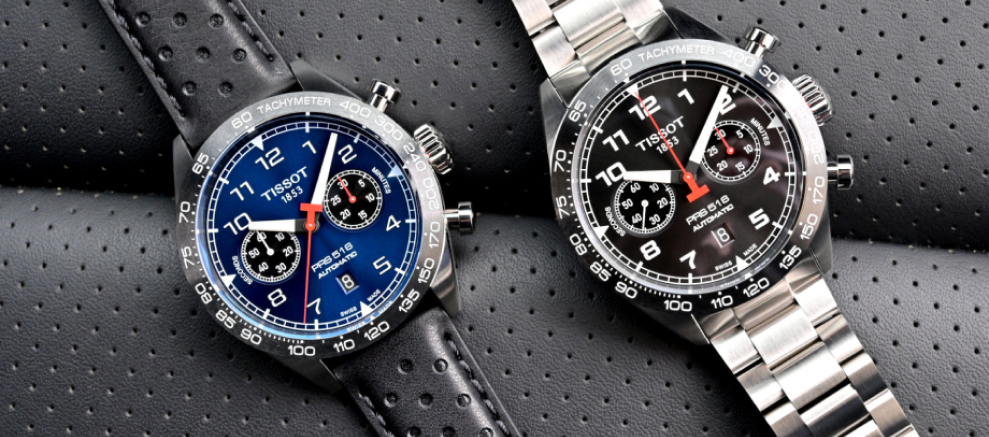
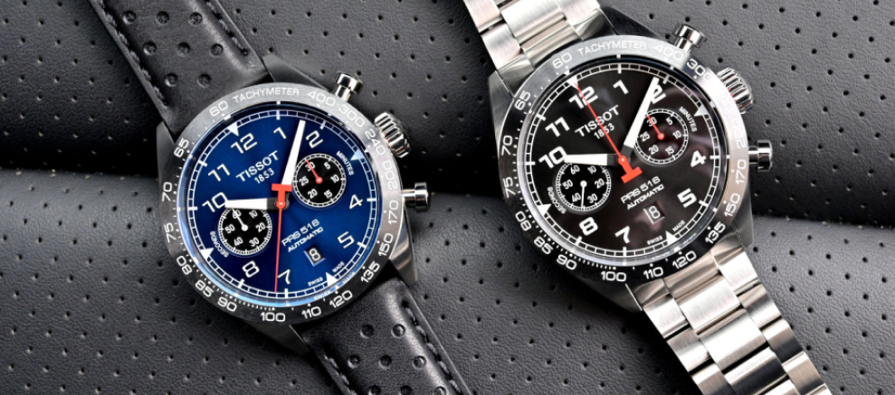

В магазинах Торговельній мережі Porten ви можете купити годинник у Бахмуті, Вінниці, Дніпрі, Житомирі, Запоріжжі, Івано-Франківську, Києві, Краматорську, Луцьку, Львові, Одесі, Покровську, Полтаві, Рівному, Слов'янську, Сумах, Тернополі, Харкові, Херсоні, Хмельницькому, Черкасах, Чернівцях, Чернігові , а також багатьох інших містах України
Годинники як інструмент визначення часу давно і надійно прижилися в людській реальності. Романтики та прагматики, художники та бізнесмени, чоловіки та жінки, дорослі та діти - всі хочуть знати котра година в потрібний момент. Скільки хвилин пройшло, скільки залишилося, а ще - які саме моделі і якого бренду виблискують на руці у друга, коханої або конкурента. З давніх часів, коли людина здогадався втикнути в землю паличку та іншою поличкою взявся відміряти рівні проміжки часу на піску, не вщухають суперечки - яким повинний бути годинник? Наручним, або настільним, або настінним, або, нарешті, підлоговим? Чому ж кожен діамантик на безеле або шестерінка в механізмі незмінно змушують гордовито випнутися нижню губу володаря аксесуара, а щоки - роздутися?
Компанія PORTEN – лідер на українському ринку годинників. На цей час ми об'єднуємо більше сорока магазинів у різних куточках України та інтернет-магазин, який став першим в нашому сегменті ринку. Торгова мережа PORTEN – офіційний дистриб'ютор більше 50 найвідоміших годинникових марок, починаючи від японської CASIO, закінчуючи швейцарськими LONGINES, ZENITH, TAG HEUER. Однак компанія не обмежується лише годинниками – в інтернет-магазині та бутіках мережі ви знайдете прекрасні ювелірні вироби від таких іменитих брендів, як SWAROVSKI и CHRISTINA.


 
